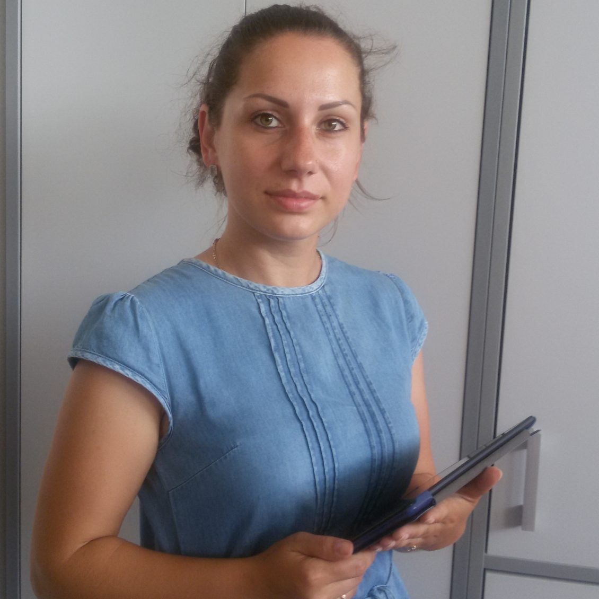

Условия работы
Вакансия:интервьюер-планшетник

Разнообразные проекты: вам предстоит проводить опросы уличные, квартирные, в точках продаж

Выплата производится в течение 1 недели с момента сдачи

Идеальное совмещение с учебой или основной работой

Оплата за 1 интервью варьируется в зависимости от длительности интервью и сложности решаемой задачи (от 80 до 250 руб.)
Преимущественно – работа на планшетах. Оборудование предоставляется

Свободный график работы: менеджер указывает срок сдачи и определяет объем работ, а интервьюер работает в удобное ему время
Требования к соискателям

Возраст не имеет никакого значения!

Грамотная устная речь

Умение общаться с людьми, коммуникабельность

Стрессоустойчивость и настойчивость
Подробно о вакансии
Интервьюер - это интересная профессия для людей любого возраста, связанная с общением. Квалифицированный интервьюер может зарабатывать больше офисного сотрудника, иметь при этом гибкий график работы и самостоятельно контролировать свою загруженность.
Кто и зачем заказывают опросы?Опросы проводят различные политические партии, государственные структуры, научные институты и т.д. Им важно получить «обратную связь» от населения по поводу того или иного вопроса: резонансного политического события, спроса на продукцию, эффективности рекламной кампании.
Где проводят опросы?Высший пилотаж – это поквартирные интервью. Интервьюеру необходимо обойти несколько домов в заданном районе и опросить людей по анкете. Люди неохотно идут на контакт с незнакомым человеком, не желают открывать интервьюеру дверь. Главное - уметь донести важность опроса и мнения каждого отдельного человека, которое в итоге будет обработано в обобщенном виде. Небольшое вознаграждение за участие в опросе также позволяет добиться расположения респондента. Начинать рекомендуем с уличных опросов или интервью в торговых точках. Они оплачиваются меньше, но и доступ к людям, подходящим под задачи исследования, гораздо проще.
Как проводят опросы?Сегодня все чаще при проведении опросов населения используются мобильные устройства (планшеты), взамен бумажным анкетам. Мы проводим обучение по работе в программе и выдаем оборудование для проведения опроса. В ходе опроса есть возможность связаться с менеджером или технической службой и оперативно решить возникшие проблемы. У планшетных опросов много преимуществ: больше не нужно носить в сумке пачку бумажных анкет, заботиться о том, не потерялась ли ручка. Интервьюеру, держащему в руках планшет (а не мятые бумажки), больше доверяют: он работает в солидной компании и сотрудник на хорошем счету.
Отзывы сотрудников
Интервьюер-планшетник
Работа с незнакомыми людьми, способность установить контакт, вызвать интерес и доверие - нелёгкий труд и в какой-то степени талант. Плюс трудолюбие и ответственность. По моему мнению, это те качества, которыми должен обладать интервьюер. Работе с людьми училась сама, работая в органах внутренних дел и в сетевом бизнесе. В «Контекст» попала случайно. Выйдя на пенсию и не желая оправдывать расхожее мнение, что «пенсия в России - это три Д» («донашивать, доедать и доживать»), искала подработку. Объявление увидела в интернете. Занималась уличными опросами, опросами в торговых точках, поквартирными интервью, проверкой работы промоутеров, выполняла роль "тайного покупателя". В последнее время освоила реализацию различных проектов с применением планшетов.
За это время лучше узнала и изучила наш замечательный Томск, познакомилась с классными людьми.
Почему я в "Контексте"? Во-первых, это тот вид деятельности, который не требует больших физических усилий (не считая факта, что «волка ноги кормят»). Во-вторых, это то, что я сносно умею делать. В-третьих, мне очень импонируют мой менеджер проектов и руководство. В-четвёртых, и главных лично для меня - это источник дохода (деньги выплачиваются своевременно и в полном объёме за выполненную работу).
Интервьюер-планшетник
Подработка интервьюером нравится тем, что не отнимает много времени, возможно подрабатывать в любое удобное время. Постоянно общаешься с новыми людьми, ну и, конечно, зарабатываешь деньги - стабильно и без задержек. Все зависит только от себя самого. Интервьюер – это хорошая работа в хорошей компании «Контекст».
Интервьюер-планшетник
Работа с незнакомыми людьми, способность установить контакт, вызвать интерес и доверие - нелёгкий труд и в какой-то степени талант. Плюс трудолюбие и ответственность. По моему мнению, это те качества, которыми должен обладать интервьюер. Работе с людьми училась сама, работая в органах внутренних дел и в сетевом бизнесе. В «Контекст» попала случайно. Выйдя на пенсию и не желая оправдывать расхожее мнение, что «пенсия в России - это три Д» («донашивать, доедать и доживать»), искала подработку. Объявление увидела в интернете. Занималась уличными опросами, опросами в торговых точках, поквартирными интервью, проверкой работы промоутеров, выполняла роль "тайного покупателя". В последнее время освоила реализацию различных проектов с применением планшетов.
За это время лучше узнала и изучила наш замечательный Томск, познакомилась с классными людьми.
Почему я в "Контексте"? Во-первых, это тот вид деятельности, который не требует больших физических усилий (не считая факта, что «волка ноги кормят»). Во-вторых, это то, что я сносно умею делать. В-третьих, мне очень импонируют мой менеджер проектов и руководство. В-четвёртых, и главных лично для меня - это источник дохода (деньги выплачиваются своевременно и в полном объёме за выполненную работу).
Интервьюер-планшетник